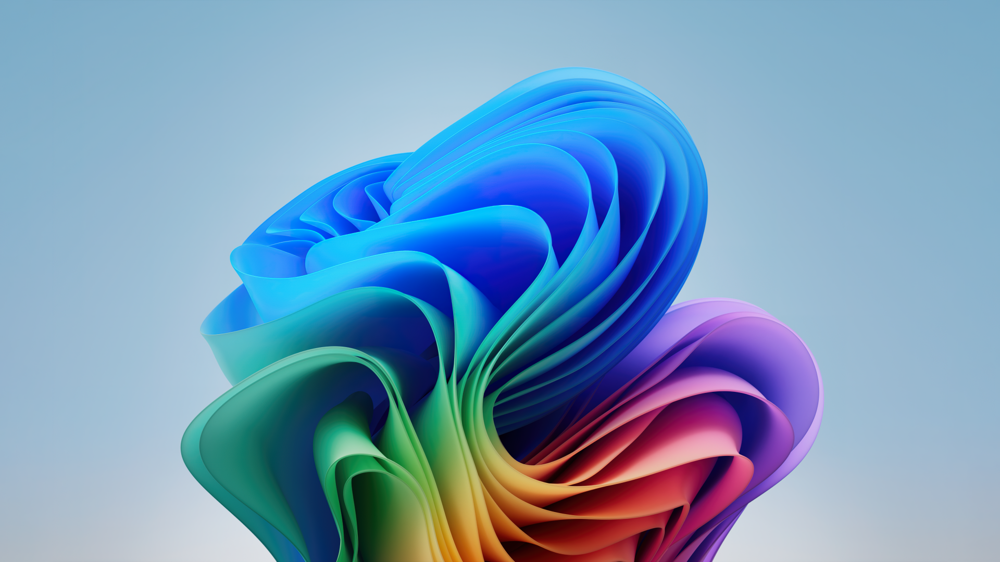
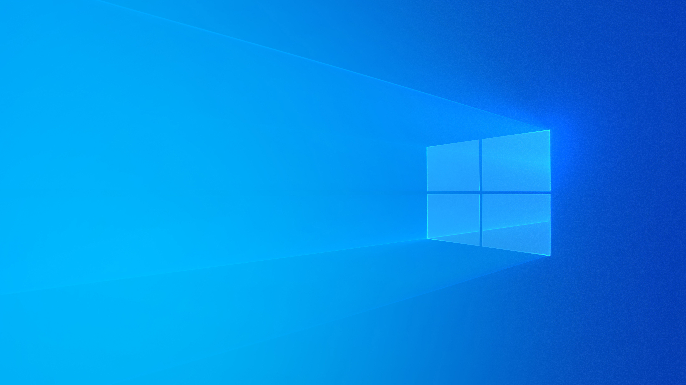
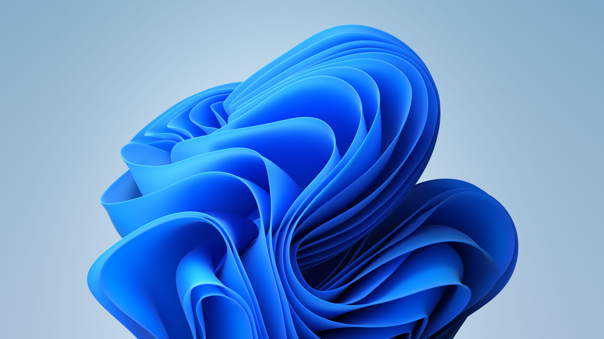
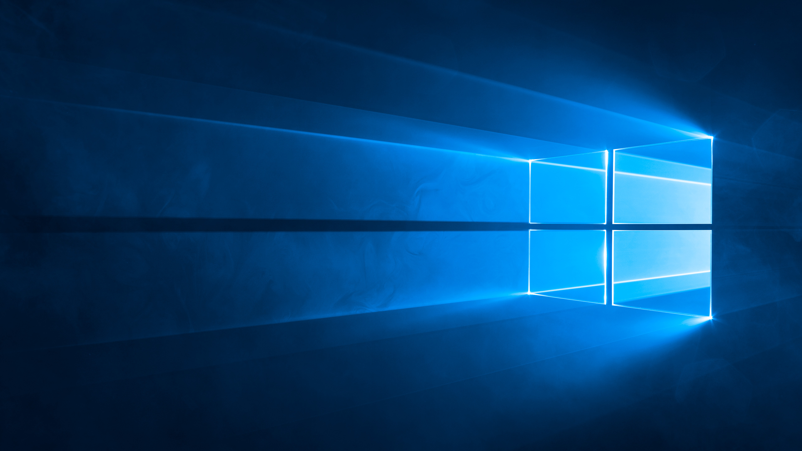

Adderly.Top
Adderly.Top
Сборки от Аддерли
Лучшие сборки Windows - без какого либо мусора, рекламы и Яндексов.
Архив сборок за 2025 год.
Основные сборки на Pro редакции

MakuOS 11 Pro 24H2
(Windows 11 24H2 26100.7015)
Сборка со всеми обновлениями и оптимизацией на основе почти самой последней версии Windows 11 – 24H2. Подойдёт для современных ПК.

MakuOS 10 Pro 22H2
(Windows 10 22H2 19045.6456)
Сборка со всеми обновлениями и оптимизацией на основе самой последней версии Windows 10. Тем, кому не нравится Windows 11, подойдёт как вариант самой актуальной системы. Подойдёт для современных ПК.
Mini и Lite сборки для слабых ПК

MakuOS 11 Lite 22H2 V2
(Windows 11 22H2, 22621.1702)
Сборка со всеми обновлениями на основе Windows 11 с обновлениями по лето 2023 года. Без Windows Defender, центра обновлений и какого либо мусора. Для современных игр она не подойдёт. Но подойдёт тем, кто хотел попробовать Windows 11 на слабых ПК.
MakuOS 10 Mini 22H2 V2
(Windows 10 22H2, 19045.6456)
Windows Mini сборка на основе самой актуальной Windows 10 со всеми финальными обновлениями. Без Windows Defender, UWP приложений и какого либо мусора. Для игр возможно подойдёт, и точно даст жизнь старому ПК.

MakuOS 10 Lite 1809
(Windows 10 1809, 17763.6414)
Сборка со всеми обновлениями на основе Windows 10 1809 с обновлениями по 2024 год. Без Windows Defender, центра обновлений и какого либо мусора. Для современных игр она не подойдёт. Но подойдёт тем, кто хочет Windows 10 на очень слабых ПК или MacBook Intel.
Сборки на основе LTSC редакции
MakuOS 11 24H2 LTSC
(Windows 11 24H2, 26100.1742)
Сборка со всеми обновлениями и оптимизацией на основе самой последней Windows 11 24H2. Тот кто любит использовать всё самое последнее - скорее всего оптимальный вариант. На старых устройствах желательно ставить 22H2.
MakuOS 10 21H2 LTSC
(Windows 10 21H2 19044.1288)
Сборка со всеми обновлениями и оптимизацией на основе самой последней версии Windows 10. Тем, кому не нравится Windows 11, подойдёт как вариант самой актуальной системы. Подойдёт для современных ПК.